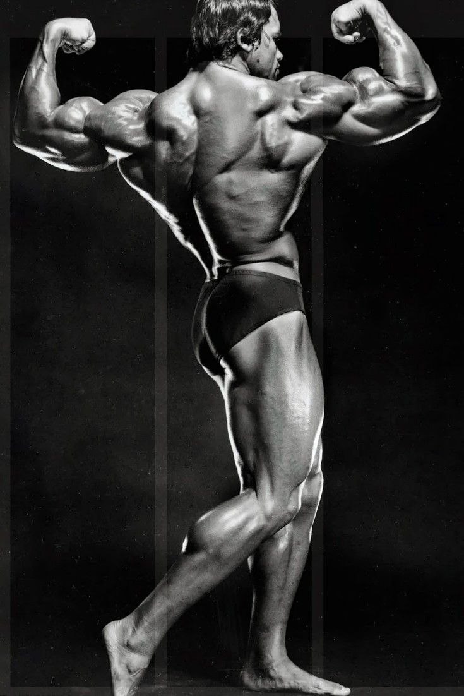
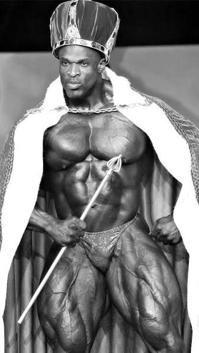
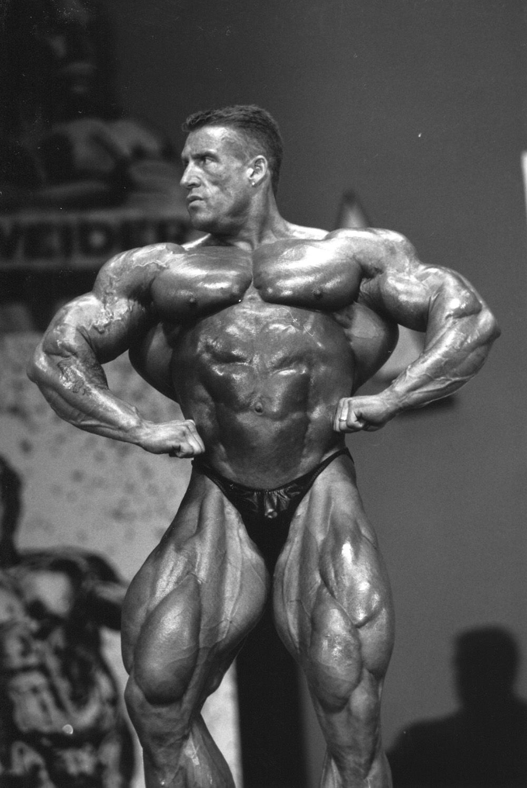

Arnold Schawazeneger

Venceu o Mr. Olympia 7 vezes nos anos 1970. Ficou famoso pelo peitoral lendário, braços marcantes e pelo carisma que levou o esporte para o mundo do cinema e da cultura pop.
Ronnie Coleman

Venceu o Mr. Olympia 8 vezes seguidas. Considerado por muitos o fisiculturista mais forte e dominante de todos os tempos, combinando um tamanho absurdo com simetria e cargas gigantescas nos treinos.
Dorian Yates

Venceu 6 Mr. Olympia consecutivos nos anos 1990. Revolucionou o esporte ao introduzir um nível de volume muscular e condicionamento denso nunca antes vistos, famoso pelo treino de altíssima intensidade. (Heavy Duty)